화약류관리기사 (2016-10-01 기출문제)
1과목: 일반화약학
1. 약경 32m, 125g 의 50% Dynamite를 순폭시험한 결과 숨폭도는 7이었다. 시간이 경과한 후 동일한 조건으로 다시 시험하였더니 최대 순폭거리가 160cm 이었다. 순폭도는 얼마나 감소하였는가?
- 1
- 2
- 3
- 5
(정답률: 97%)

2. 카릿트(carIit)폭약이 폭발할 때 발생하는 염화수소(HCI) 가스를 감소시키기 위하여 폭약의 제조 시에 배합하는 물질은?
- 경유
- DNN
- Ba(NO3)2
- NH4ClO4
(정답률: 84%)
3. 노이만(Neumann)효과를 이용하여 금속 판은 구멍을 뚫을 경우에 대한 설명으로 틀린 것은?
- 천공의 깊이는 라이너의 밀도와 관계가 있다.
- 라이너의 내각은 5‘ 미만이 적당하다.
- 라이이너의 형상은 주로 원추형이나 반구형이다.
- 폭약은 고보속인 것을 사용한다.
(정답률: 80%)
4. 다음 반응식과 같이 폭발하는 폭약은?
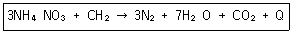
- ANFO
- TNT
- 질산구아딘
- 콜다이드
(정답률: 89%)
5. 뇌관의 성능을 시험하기 위한 난판시험에서 사용하는 난판의 두께는?
- 2mm
- 4mm
- 6mm
- 8mm
(정답률: 95%)
6. 다음 중 폭약의 폭속에 영향을 주는 인자오 가장 거리가 먼 것은?
- 지름
- 밀도
- 용기도 강도
- 색상
(정답률: 98%)
7. 다음 중 무연화약의 안정제로 주로 사용 하는 것은?
- 알코올
- 아세톤
- 디페닐아민
- 니트로글리세린
(정답률: 85%)
8. 목분 1kg을 연소시킬 때 961L의 산소가 부족하여 산소공급제로 KNO3를 사용하였다. 이 때 산소균형을 위한 질산칼륨은 약 몇 kg이 필요한가? (단, K의 원자 량은 39이고, KNO3 1kg 당 산소발생량은 277L이다.)
- 1.5
- 3.5
- 4.5
- 5.5
(정답률: 93%)
9. 법규에 의한 화악류 분류에 있어서 폭약에 해당되지 않는 것은?
- 공포탄
- 뇌홍
- 펜트리트
- 테트릴
(정답률: 97%)
10. 한국산업표준에서 정한 전기뇌관에 관한 규정에서 각선의 심선 지름은 몇mm 이상으로 하여야 하는가?
- 0.1
- 0.2
- 0.4
- 0.5
(정답률: 77%)
11. 국내산 2종 도화선의 평균 연소 초시 규격으로 옳은 것은?
- 평균 연소 초시 100~140초/m, 편차±7%이내
- 평균 연소 초시 120~140초/m, 편차±7%이내
- 평균 연소 초시 100~140초/m, 편차±10%이내
- 평균 연소 초시 120~140초/m, 편차±10%이내
(정답률: 94%)
12. 화약류시험법 가운데 안정도 시험만으로 구성된 것은?
- 둔성폭약시험, 내열시험
- 가열시험, 내열시험
- 발화점시험, 도화선시시험
- 순폭시험, 마찰감도시험
(정답률: 100%)
13. 다음 화약류에 대한 설명 중 가장 옳은 것은?
- 전기뇌관을 98.1kpa의 수랍에서 물속에 10분 담가 두면 불발이 된다.
- 칼로 도화선을 절단하면 마찰에 의해 발화한다.
- 전기뇌관을 실수로 불속에 떨어뜨리면 폭발한다.
- 도화선을 잘못하여 콘크리트 바닥에 떨어뜨리면 폭발한다.
(정답률: 95%)
14. 전기뇌관 20발을 직렬로 결선하여 제발하자면 최저 몇 v의 접압이 필요한가? (단, 뇌관 1개의 저항 1.6Ω 단선 1m의 저항 0.02Ω, 사용된 단선의 총연장길이 150m 발파기의 내부저항 0Ω 소요전류 2A이다.)
- 50
- 58
- 70
- 80
(정답률: 94%)
15. 연화(꽃불)류에 사용되는 화염제로 녹색 불꽃을 내는 것은?
- Sr(NO3)2
- Ba(NO)2
- Na2C2O4
- CaCO3
(정답률: 92%)
16. 다음 중 니트로글리세린의 용해도가 가장 낮은 것은?
- 에틸알코올
- 물
- 벤젠
- 에틸에테르
(정답률: 91%)
17. 혼합다이너마이트에 해당하지 않는 것은?
- 규조토 다이너마이트
- 스트레이트 다이너마이트
- 암모니아 다이너마이트
- 분상 다이너마이트
(정답률: 94%)
18. 젤라틴 다이너마이트를 탄동구포 시험한 결과 흔들림 각도가 16도였다. RWS는 약 몇 %인가? (단, 기준약 다이너마이트의 흔들림 각도는 18도이다.)
- 79
- 85
- 90
- 95
(정답률: 84%)
19. 흑색화약의 성질에 대한 설명으로 옳은 것은?
- 화염과 마찰ㆍ충격에 둔감하다.
- 습기를 피하면 장기간 저장이 가능하다.
- 주성분은 황산암모늄이다.
- 폭발열은 약 7000kcal/kg이다.
(정답률: 97%)
20. 슬러리(slurry)폭약의 조성으로 옳은 것은?
- NH4NO4+TNT+H2O
- NH4Cl+TNT
- NH4NO3+H2S
- NH4Cl+DNN+H2O
(정답률: 94%)
2과목: 발파공학
21. 항만, 교각 등의 건설에 사용되는 대괴를 얻기 위한 발파 방법으로 옳지 않은 것은?
- 낮은 비장약량으로 발파한다.
- 공간격/저항선의 비를 1보다 작게 한다.
- 지발발파로 설계하여 발파한다.
- 1회 1열씩 기폭시킨다.
(정답률: 54%)
22. 발파의 경제성에 대한 설명으로 옳지 않은 것은?
- 천공수와 폭약량을 줄이면 발파비용은 감소하나 운반비용이 증가한다.
- 장약과 발파비용은 소규경보다는 개구경천공에서 많이 든다.
- 파쇄암의 크기가 작을수록 크러싱 비용이 감소한다.
- 소할발파는 본 발파 후에 별도로 실시되므로 발파 비용을 증가시킨다.
(정답률: 50%)
23. 계단높이 10m, 계단폭 25m, 암석계수 0.4kg/m3인 암반에 천공격 75mm로 수평면과 수직으로 하향전공하여 지발발파를 실시하고자 할 때, 최대저항선은 얼마인가? (단, 사용된 폭약은 ANFO이며, 발파공저부분의 장약집중도는 3.2kg/m이고, 최대저항선은 Langefors의 간편식으로 계산한다.)
- 2.31m
- 2.68m
- 3.15m
- 3.85m
(정답률: 26%)
24. 20공의 발파공을 기폭하기 위한 뇌관으로 비전기식 뇌관 LP1번, LP2번, LP3번, LP4번, LP5번이 각각 4개씩 있다. 모든 발파공이 25ms의 시차를 두고 순차적으로 기폭되도록 하기 위해서는 지연시차가 25ms인 연결뇌관이 최소 몇 개가 필요한가?
- 2개
- 3개
- 4개
- 5개
(정답률: 50%)
25. 누두지수(n)=1.3일 때 Marescott공식에 의해 누두지수의 함수 f(n) 값을 구하면 얼마인가?
- 1.26
- 1.59
- 1.96
- 2.34
(정답률: 58%)
26. 암반의 지질학적 특성을 고려하여 비장약량의 선정에서 발파패턴을 설계하는데 이용되는 Lilly의 발파지수(BI)와 관계된 요소가 아닌 것은?
- 암반형태
- 절리방향
- 비중지수
- 암질지수
(정답률: 54%)
27. Trim Blasting에 대한 설명으로 옳지 않은 것은?
- 주 발파부분이 발파된 후 점화하는 발파법이다.
- 매끈한 발파면을 얻기 위해 주상장약밀도를 공저장약의 2배 정도로 한다.
- 저한선을 공간격보다 1.3배 정도 길게 계획한다.
- 일반적으로 초과 천공(Sub-drilling)을 실시하지 않는다.
(정답률: 66%)
28. 소음의 전파 등에 관한 설명으로 옳지 않은 것은?
- 음원에서 방사되는 음의 강도가 방향에 의해서 변화하는 상태를 지향성이라고 한다.
- 지향성이 큰 경우 특정방향의 음압레벨과 평균 음압레벨과의 차이를 지향지수라고 한다.
- 자동차 도로와 같이 소음원이 다수 연속하여 이어지는 경우를 점은원이라 한다.
- 벽을 투과하여 소음이 생기는 경우처럼 음원이 넓게 펼처진 경우를 면음원이라 한다.
(정답률: 75%)
29. 진동을 분류함에 있어 발파진동과 지진동으로 분류할 수 있다. 다음 중 설명이 옳지 않은 것은?
- 발파진동의 경우 지진동에 비해 저속진동이 짧다.
- 지진동의 경우 지하 수 km 이상되는 지점에서 발생되며, 발파진동의 경우 지표 또는 지표 가까운 부분에서 발생된다.
- 진동의 주파수는 발파진동이 지진동에 비해 작게 발생되므로 건물에 미치는 영향이 크다.
- 지진에 의한 진동 피해의 경우 그 정도를 보통 가속도로 표시하고, 발파 진동에 의한 구조물의 피해는 진동 속도로 표시한다.
(정답률: 66%)
30. 다음과 같은 특징을 갖는 발파해체공법은 무엇인가?
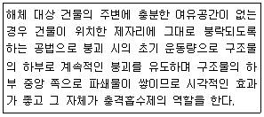
- 전도공법(Felling)
- 단축붕괴공법(Telescoping)
- 상부붕락공법(Toppling)
- 점진붕괴공법(Progressive Collapse)
(정답률: 68%)
31. 심빼기 발파에 대한 설명으로 옳지 않은 것은?
- 심빼기 발파는 자유면을 증가시킬 목적으로 실시한다.
- 심빼기의 위치는 터널막장 어느 장소에도 위치될 수 있다.
- 평행공 심빼기는 소결현상을 방지하기 위하여 저비중의 폭약을 사용한다.
- 경사공 심빼기는 터널 단면이 크고, 장공 천공을 위한 장비투입이 가능한 경우에 주로 적용된다.
(정답률: 57%)
32. 다음 그림과 같이 절리가 발달한 암반에 계단 발파를 계획하였을 때의 일반적인 장점으로 옳은 것은?
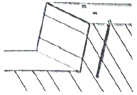
- 여굴이 적다.
- 바닥에 그루터기가 남지 않는다.
- 폭약의 에너지를 효과적으로 이용한다.
- 파쇄된 암석의 이동성이 좋으므로 버럭 처리가 쉽다.
(정답률: 46%)
33. 발파 시 홉킵슨 효과에 의한 파괴 메커니즘을 기대하기 어려운 재료는?
- 암반
- 철근
- 콘크리트
- 모르타르
(정답률: 71%)
34. 충격하중에 대한 설명 중 가장 거리가 먼 것은?
- 충격하중은 하중이 순간적으로 극히 높은 유한치로 상승하였다가 그 후 천천히 감소되는 하중으로 작용시간은 수초에 이른다.
- 충격하중 하에서 물체 내에서 현저한 응력의 불균일성이 발생한다.
- 충격하중에 의해 물체 내에 유발된 응력분포는 일반적이며 과도적이며 극히 국한된다.
- 충격하중을 받는 물체는 동적양상을 지니며, 그로 인해 물체에 운동을 일으킨다.
(정답률: 47%)
35. 전기발파를 실시하였는데 발파 회로의 여기저기에 불발이 되었을 때 불발의 원인과 거리가 먼 것은?
- 발파기의 출력이 부족한 경우
- 모선과 각선이 단선되어 있는 경우
- 결선부가 녹슬어 있는 경우
- 타사제품의 뇌관을 혼용하였을 경우
(정답률: 49%)
36. 다음 중 전색물의 조건으로 옳지 않은 것은?
- 구입 및 운반이 쉬운 재료
- 공벽과의 마찰이 작은 재료
- 폭약의 기폭 시 연소되지 않는 재료
- 압축률이 작지 않아서 단단히 다져질 수 있는 재료
(정답률: 75%)
37. 다단식발파기(Sequential Blasting Mechine)를 이용한 발파에 대한 설명으로 옳지 않은 것은?
- 제어발파가 가능하며, 발파진동 및 소음을 줄일 수 있다.
- 결선 후 연결여부 및 저항을 손쉽게 확인할 수 있다.
- 표면뇌관이 터지는 소음으로 민원을 발생시킬 수 있다.
- 누설전류가 있는 곳에는 사용할 수 없다.
(정답률: 61%)
38. 소음의 전파에서 음원으로부터 20m 지나는 점의 지향지수가 8dB이라면 지향계수는 얼마인가?
- 3.16
- 4.16
- 5.36
- 6.31
(정답률: 25%)
39. 발파계수가 0.2인 균질한 보통암에 pre-splitting발파를 실시하기 위해 직경 65mm의 비트를 사용하여 깊이 6m, 공간격 70cm로 천공하였다. 1공당 적정 장약량은? (단, 기타 조건 등은 무시한다.)
- 2.75kg
- 1.82kg
- 1.45kg
- 0.84kg
(정답률: 26%)
40. 트렌치 발파에 대한 설명으로 옳지 않은 것은?
- 트렌치 발파는 계단식 발파의 형태로 계단의 폭이 매우 좁은 것이 특징이다.
- 트렌치 발파에 있어서 암반은 정상적인 계단식 발파보다 더욱 구속되어 있어 비장약량이 증가되고 비천공장이 길어진다.
- 비장약량을 감소시키기 위해 계단의 폭을 계단 높이보다 크게 하여 발파하는 방법이다.
- 트렌치 발파 시 발파공은 일반적으로 수직천공을 피하고 경사천공을 실시한다.
(정답률: 48%)
3과목: 암석역학
41. 터널 상부의 불량한 지반에 대해 터널 굴착 전 지반고강 그라우팅을 수행하고 터널을 굴착하였다. 그라우팅 후의 지반조건 변화에 대한 설명으로 옳은 것은?
- 응력-변형률 선도의 기울기가 감소한다.
- 지반 토입자의 결합강도가 감소한다.
- 전단응력-수직응력 선도의 파괴포악선이 상향한다.
- 지반의 공극비가 증가한다.
(정답률: 38%)
42. 다음 중 중간주응력의 영향을 고려하는 암석 파괴이론은?
- Griffith 파괴이론
- Von Miss 파괴이론
- Mohr-Coulomb 파괴이론
- Tresca 파괴이론
(정답률: 69%)
43. 다음과 같은 역학적 모형은?
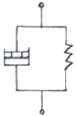
- Maxwell 물체
- Bingham 물체
- Voigt(Kelvin) 물체
- St. Venant 물체
(정답률: 56%)
44. 지하 100m 심도에 지하저장 공동을 굴착하려고 한다. 최대 무지보폭은 얼마인가? (단, Q분류값=5, 공동지보비 ESR=1.3)
- 4.95m
- 5.95m
- 6.95m
- 7.95m
(정답률: 58%)
45. 2차원 직교 좌표계(x, y)에서 x축에 수직한 면에 작용하는 응력으로서 y축과 평행한 방향으로 작용하는 응력은?
- σxx
- σyx
- σxy
- σyy
(정답률: 65%)
46. 피로파괴에 관한 설명으로 옳지 않은 것은?
- 피로파괴란 반복하중 후에 발생되는 파괴를 말한다.
- 반복회수가 증가할수록 피로파괴한계강도에 빠르게 도달한다.
- 피라하중에 의해 파괴도리 때의 강도를 피로강도라 하며 암석의 경우 일축압축강도의 40% 수준이다.
- 반복하중이란 하중을 가하다가 제거하는 것을 주기적으로 반복하는 것이다.
(정답률: 68%)
47. 직경 54mm인 NX코어를 이용하여 직경방향으로 점하중강도시험을 실시하였더니 14.58kN에 코어가 파괴되었다. 크기보정한 점하중강도지수로 옳은 것은?
- 3.27MPa
- 5.0MPa
- 5.18MPa
- 6.37MPa
(정답률: 44%)
48. 지반을 개개인의 강성 블록으로 모델링하고 불연속면에서의 변위가 블록 자체의 변형보다 대단히 큰 경우 효과적으로 적용할 수 있는 수치해석법은?
- 개별요소법
- 한계평형해석법
- 유한요소법
- 경계요소법
(정답률: 54%)
49. 포아송비에 대한 설명 중 틀린 것은?
- 포아송비가 0이면 가압방향과 가압발향에 직각인 방향 모두 변형이 발생하지 않는다.
- 포아송비는 무차원으로서 암석은 0.1~0.3 정도이다.
- 포아송비의 역수를 포아송수라 한다.
- 코르크(cork)는 포아송비가 0에 가깝기 때문에 축과 직각인 방향에는 거의 변형이 일어나지 않는다.
(정답률: 42%)
50. 직각으로부터의 각의 변화를 나타내는 양은?
- 전단변형률
- 수직변형률
- 수직응력
- 전단응력
(정답률: 47%)
51. 어느 교각 기초가 놓인 하부 암반은 몬모릴로나이트 성분의 점토가 관입될 불연속면이 발달해 있다. 시간 경과 후 지하수가 기초 암반에 침투하였을 경우 발생 가능한 암반 거동은?
- 점토의 압착(Squeezing)
- 항복 후 강도 증가(Strain Hardening)
- 점토의 팽창(Swelling)
- 절리의 피로파괴(Fatigue Failure)
(정답률: 70%)
52. 절리 경사각, Ψi, 사면 경사각 Ψs, 절리 마찰각 ø일 때 전도파괴(Toppling failure)가 발생하기 위한 조건으로 옳은 것은?
- Ψs＞Ψi＞ø
- Ψs＞Ψi＞ø+90°
- Ψs+Ψi＜ø+45°
- Ψs+Ψi＞ø+90°
(정답률: 54%)
53. 다음 중 압축 시험으로부터 구할 수 없는 암석의 성질은?
- 공극률
- 영률(Young's, modulus)
- 포아송비(Poisson's ratio)
- 압축강도
(정답률: 63%)
54. 절리면에 대한 전단시험 결과 아래의 그림과 같은 결과를 얻었다. 10MPa의 수직응력이 절리면에 작용할 때, 이 절리면의 최대전단강도는 얼마인가?
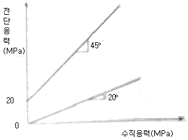
- 3.64MPa
- 5.64MPa
- 12.0MPa
- 14.0MPa
(정답률: 39%)
55. 암석의 표면에 부착된 0-45-90 변형률 rosette를 이용하여 측정된 변형률은 각각 다음과 같을 때 측정 짐의 전단변형률 γxy는 얼마인가?
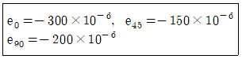
- 4×10-4
- 3×10-4
- 2×10-4
- 1×10-4
(정답률: 50%)
56. 암반에서 초기지압의 특성에 대한 설명으로 옳은 것은?
- 수평응력은 등방성을 나타낸다.
- 천층일수록 수직응력이 수평응력보다 크다.
- 깊이가 길어지면 연직응력은 더 이상 증가하지 않는다.
- 수직응력과 수평응력의 비는 심도가 깊어질수록 1에 가까워진다.
(정답률: 47%)
57. 다음 그림은 무슨 시험을 하기 위한 것인가?
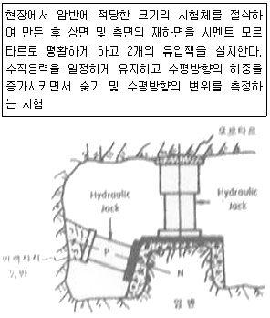
- In-situ shear Test
- Plate bering Test
- Flat jack Test
- Hydraulic fracturing
(정답률: 54%)
58. 다음 중 RQD(Rock Quality Designation)에 대한 설명이 틀린 것은?
- 일반적으로 NX 코어를 사용하여 계산한다.
- 절리의 방향성을 고려하지 못한다.
- 총 시추길이에 대한 길이 10cm 이상되는 코어 길이의 합의 백분율이다.
- RMR의 분류요소에 속하지 않는다.
(정답률: 63%)
59. 삼축일축 시험에서 구속압을 증가시키면 나타나는 현상이 아닌 것은?
- 최대 강도가 증가한다.
- 취성거동에서 연성거동으로의 정이가 일어난다.
- 변형률 연화에서 변형률 경화로의 전이가 발생한다.
- 최대 강도 후에 응력의 감소가 점차 커진다.
(정답률: 52%)
60. 암석의 물성이 다음과 같을 때, 이 암석의 탄성계수비(Modulus Ratio)는 얼마인가? (단, 탄성계수는 5.0×105kg/cm2, 포아송비는 0.25, 단축압축강도는 2000kg/cm2, 인장강도는 250kg/cm2)
- 8.0
- 2.0×106
- 1.25×105
- 250
(정답률: 36%)
4과목: 화약류 안전관리 관계 법규
61. 테트라센 및 이를 주로 하는 기폭약은 수분 또는 알코올분이 몇 %정도 머금은 상태로 운반해야 하는가?
- 25%
- 23%
- 20%
- 15%
(정답률: 68%)
62. 화약류운반신고필증은 지체없이 반납하여야 할 사유로 볼 수 없는 것은? (단, 법규상의 내용에 한함)
- 화약류를 운반하지 아니하게 된 때
- 운반기간이 경과한 때
- 운반을 완료한 때
- 운반 중 교통사고가 난 때
(정답률: 79%)
63. 종포ㆍ도검ㆍ화약류 등의 안전관리에 관한 법률에서 정한 안정도시험에 사용하는 것과 거리가 먼 것은?
- 적색리트머스시험지
- 아이오딘화칼륨녹말종이
- 유리산시험기
- 내열시험기
(정답률: 62%)
64. 꽃불류저장소 주위의 방폭벽의 위치ㆍ구조 등의 기준으로 옳지 않은 것은?
- 방폭벽은 두께 10cm 이상의 철근콘크리트조 또는 두께 15cm 이상의 보강콘크리트블록조를 할 것
- 발폭벽은 꽃불류저장소의 바깥벽과의 거리가 2m 이상이 되도록 할 것
- 방폭벽은 꽃불류저장소의 처마높이 이상으로 할 것
- 방폭벽의 출입구에는 그 바깥쪽에 다시 방폭벽을 설치할 것
(정답률: 67%)
65. 총포ㆍ도검ㆍ화약류 등의 안전관리에 관한 법률에 따른 화공품에 속하지 않는 것은?
- 실탄 및 공포탄
- 자동차 긴급신호용 불꽃신호기
- 자동차 에어백용 가스발생기
- 로단염류
(정답률: 67%)
66. 양수 허가의 최대유효 기간은?
- 10년 이하
- 5년 이하
- 3년 이하
- 1년 이하
(정답률: 74%)
67. 지하 1급 화약류저장소에 폭약 17톤을 저장할 때 저장소의 지반 두께기준은?
- 20m 이상
- 21.5m 이상
- 24m 이상
- 26m 이상
(정답률: 65%)
68. 화약류 저장소에서 일어나는 일들 중 잘못된 것은? (단, 수중저장소 제외)
- 저장소에서 화약류를 출고할 때 저장기간이 오래된 것부터 출고하였다.
- 저장소안에서 수불상황을 확인하기 위하여 뇌관 상자의 뚜껑을 열어 뇌관 숫자를 파악하였다.
- 저장소 내부에 무연화약 또는 다이너마이트를 저장하였을 때 온도계를 비치하였다.
- 저장소의 경계 울타리 안에는 필요 없는 사람의 출입을 금지하였다.
(정답률: 77%)
69. 화약류관리보안책임자의 선임기준으로 옳지 않은 것은?
- 폭약은 1개월에 30kg씩 4개월에 걸쳐서 사용할 사람은 화약류관리보안책임자를 선임할 필요가 없다.
- 화약류관리보안책임자의 선임은 화약류저장소 4동까지 1인으로 하되, 4동을 초과하는 경우에는 초과하는 1동마다 1인을 추가 선임해야 한다.
- 꽃불류 및 장난감용 꽃불류저장소는 2급 화약류관리보안책임자를 선임해도 된다.
- 연중 40톤 이상의 폭약을 저장하는 화약류저장소에는 1급 화약류관리보안 책임자를 전입해야 한다.
(정답률: 65%)
70. 화약류의 취급에 대한 설명으로 옳지 않은 것은?
- 사용하고 남은 화약류는 화약류 취급소에 반납 보관한다.
- 전기뇌관에 대한 도통ㆍ저항시험의 시험전류는 0.01A를 초과해서는 안된다.
- 화약류를 취급하는 용기는 목재 그 밖의 전기가 통하지 아니하는 견고한 구조로 한다.
- 얼어서 굳어진 다이나마이트는 섭씨 30도 이하의 온도를 유지하는 실내에서 누그러뜨린다.
(정답률: 55%)
71. 화약류의 적재방법의 기술상의 기준으로 옳지 않은 것은?
- 화약류(초유폭약ㆍ실탄ㆍ공포탄 및 포탄제외)는 싣고자 하는 차량의 적재정량의 80%를 초과하여 적재해서는 안된다.
- 운반중에 마찰 또는 동요되거나 굴러 떨어지지 않도록 하여야 한다.
- 화약류는 방수 및 내화성이 있는 덮개로 덮어야 한다.
- 화약류와 철강재를 동일한 차량에 함께 실어 운반할 때는 서로 부딪치지 않도록 단단히 묶어야 한다.
(정답률: 74%)
72. 학교ㆍ연구소 등 공인된 기관에서 물리ㆍ화학상의 실험용으로 도폭선을 사용할 때 1회의 사용량은? (단, 사용허가를 받지 앟고 사용할 수 있는 수량)
- 500m 이하
- 400m 이하
- 300m 이하
- 200m 이하
(정답률: 58%)
73. 다음 중 화약류 운반방법에 관한 기술상 기준으로 옳은 것은?
- 디아조디니트로페놀을 주로 하는 기폭약은 수분 또는 알코올분이 15% 정도 머금은 상태로 운반해야 한다.
- 뇌홍을 주로 하는 기폭약은 수분 또는 알코올분이 20% 정도 머금은 상태로 운반해야 한다.
- 니트로셀룰로오스는 수분 또는 알코올분이 23% 정도 머금은 상태로 운반해야 한다.
- 펜타에리스릿트는 수분 또는 알코올분이 10% 정도 머금은 상태로 운반해야 한다.
(정답률: 77%)
74. 화약류 사용자는 화약류 출납부를 그 기입이 완료한 날부터 몇 년간 보존하여야 하는가?
- 1년
- 2년
- 3년
- 5년
(정답률: 75%)
75. 영화 또는 연극의 효과를 위하여 1일 동일한 장소에서 사용허가를 받지 아니하고 사용할 수 있는 꽃불류 수량의 기준으로 틀린 것은? (단, 쏘아 올리는 꽃불류는 제외)
- 원료화약 또는 폭약 15g 미만의 꽃불류 50개 이하
- 원료화약 또는 폭약 15g 이상 30g 미만의 꽃불류 20개 이하
- 원료화약 또는 폭약 30g 이상 50g 이하의 꽃불류 5개 이하
- 발연통ㆍ촬영조명통 또는 폭약(폭발음을 내는 것에 한한다) 0.1g 이하의 꽃불류
(정답률: 75%)
76. 총포ㆍ화약류의 제조업을 하려는 자는 제조소마다 행정자치부령으로 정하는 바에 따라 다음 중 누구의 허가를 받아야 하는가?
- 법무부 장관
- 국방부 장관
- 특별시 시장 및 도지사
- 경찰청장
(정답률: 80%)
77. 화약류의 저장ㆍ취급방법으로 옳은 것은?
- 화약류는 절대로 저장소 이외의 장소에는 저장해서는 안된다.
- 화약 또는 폭약과 포장된 실탄은 동일 저장소에 저장해서는 안된다.
- 저장중인 다이나마이트 등의 약포에서 니트로글리세린이 스며 나와 마루 바닥을 오염시킨 때에는 물 100ml에 가성소다 150g을 녹이고 알콜 1l를 혼합한 액체로 니트로글리세린을 분해시키고 마른걸레로 닦아낸다.
- 수중저장소에 가루로 된 화약류를 저장시에는 15% 정도의 물기를 머금게 하고, 물이 스며들 수 없게 포장하여 나무상자에 넣고, 덩어리 화약류는 물에 항상 잠김 상태로 저장한다.
(정답률: 57%)
78. 폭약을 수출 또는 수입하고자 하는 사람은 행정자치부령이 정하는 바에 의하여 그때마다 누구의 허가를 받아야 하는가?
- 경찰서장
- 국민안전처장관
- 경찰청장
- 행정자치부장관
(정답률: 70%)
79. 대발파 종료 후 발파장소에 접근할 수 있는 최소경과시간은?
- 60분
- 40분
- 30분
- 10분
(정답률: 80%)
80. 간이저장소에 저장할 수 있는 미진동파 쇄기의 최대 저장량으로 옳은 것은?
- 300개
- 1000개
- 1만개
- 3만개
(정답률: 67%)
5과목: 굴착공학
81. 다음의 분류요소에 대한 점수로부터 구한 기초 RMR 값은?
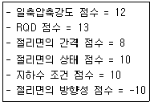
- 43
- 53
- 63
- 73
(정답률: 42%)
82. 다음 중 터널시공 시 방수공에 대한 설명으로 옳지 않은 것은?
- 지하수위보다 깊은 터널에서는 지하수용출을 완전히 막을 수 있는 방수공을 채택해여야 한다.
- 방수공은 면상 방수공과 선상 방수공으로 대별할 수 있고 선상 방수공은 뿜칠 방식과 시트방식으로 나뉜다.
- 방수 시트는 콘크리트 타설 시에 파손되지 않는 강도 및 내구성, 시공성이 좋은 것을 선정하여야 한다.
- 복공 완료 후의 이어붓기 이음이나 균열에서의 누수는 도수공법이나 지수주입공법을 사용한다.
(정답률: 67%)
83. RQD는 몇 cm 이상의 코어의 누적 백분율인가?
- 5cm
- 10cm
- 15cm
- 20cm
(정답률: 67%)
84. 다음 터널의 계측 항목 중 계측을 수행하는 빈도와 목적에 있어 그 성격이 다른 항목은?
- 지중침하 측정
- 천단침하 측정
- 지중변위 측정
- 숏크리트 응력 측정
(정답률: 40%)
85. 정수압적인 초기응력 P0 가 작용하는 일정깊이의 암반 내에 지보공ㆍ복공 등의 반력으로 내압 P1이 작용하는 원형공동을 굴착하였다. 원형공동의 측벽면에서 원형공동의 반경만큼 이격된 곳에 작용하는 반경방향의 응력(σr)은? (단, 암반은 완전 탄성체로 가정한다.)
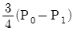
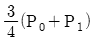
- -3P0+4P1
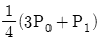
(정답률: 43%)
86. 터파기를 하기 위해 평탄한 지표면에서 수직으로 6m 깊이의 지반을 절취하고 옹벽을 구축하였다. 이 벽에 작용하는 토압 총합력의 작용위치로 가장 적합한 지점은?
- 지표면 아래 1m 지점
- 지표면 아래 2m 지점
- 지표면 아래 3m 지점
- 지표면 아래 4m 지점
(정답률: 22%)
87. Q-system에 의해 암반을 분류하기 위해 대상암반에 대한 조사 및 시험결과 암질지수(RQD) 56%, 절리군의 점수 6.0, 절리면 거칠기의 침수 1.5, 절리면 변질정도의 점수 1.0, 응력에 의한 점수 2.5, 지하수에 의한 점수 1.0이다. Q값은?
- 2.5
- 5.6
- 15.6
- 35.0
(정답률: 50%)
88. 지하수위가 지표면과 일치되며 내부마찰각이 30°, 포화단위중량이 2.0t/m3인 비점성토로 된 반 무한사면이 15°로 경사져 있다. 이 때 이 사면의 안전율은?
- 1.00
- 1.08
- 2.00
- 2.15
(정답률: 30%)
89. 불포화된 모래입자가 표면장력 때문에 팽창하는 현상을 무엇이라 하는가?
- swelling
- bulking
- slaking
- plasticity
(정답률: 43%)
90. 수갱을 굴착할 때 사용되는 작업발판으로서 상부에서의 폐석 낙하에 대한 보호설비를 겸하는 장비는?
- 백호우
- 버킷
- 키블
- 스카폴드
(정답률: 68%)
91. 다음 중 수치해석을 할 때 대칭축을 사용하여 해석 영역을 축소할 수 없는 경우는?
- 정수압하의 좌우대칭인 터널
- 단축압축응력을 받는 원형터널
- 전단 응력이 작용하는 원형터널
- 측면이 구속되고 장축이 측면에 직각인 타원형 터널
(정답률: 54%)
92. 터널공사를 하기 위하여 RMR에 의해 암반분류를 실시하고자 한다. 이 때 가장 큰 영향을 미치는 분류 변수는?(문제 오류로 확정답안 발표시 3, 4번이 정답 처리 되었습니다. 여기서는 가답안인 4번을 누르면 정답 처리 됩니다.)
- RQD
- 불연속면의 간격
- 불연속면의 상태
- 불연속면의 방향성
(정답률: 35%)
93. 숏크리트(shotcrete)의 작용 효과로 가장 거리가 먼 것은?
- 매달림 효과
- 풍화 방지 효과
- 원지반 하중의 배분효과
- 내압 효과
(정답률: 64%)
94. 토목용 터널과 광산용 터널의 차이점에 대한 설명 중 옳지 않은 것은?
- 토목용 터널은 반영구적인 안정성이 요구된다.
- 토목용 터널에 비해 광산룔 터널설계 시 상세한 부지특성 조사가 요구된다.
- 광산용 터널은 지압변화에 따른 영향을 많이 받는다.
- 광산용 터널의 위치는 암질보다 광체위치에 더 영향을 받는다.
(정답률: 38%)
95. 1m 길이의 암석 시추코어 중에 부스러기를 제외한 시추코어의 길이가 8, 12, 23, 9, 14, 3, 15cm이었다면 이 암석의 TCR(총코어회수율)은 얼마인가?
- 64%
- 73%
- 78%
- 84%
(정답률: 60%)
96. 지표면과 지하수면이 일치하는 정규압밀 점성토 지반에서 지표면 아래 임의지역점 z에서 일축압축강도 qu=0.4zt/m2의 결과가 나왔다. 점토의 포화단위 중량, γsat=1.6t/m3이면 강도증가가비 (
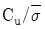
)는 얼마인가?- 0.125
- 0.25
- 0.33
- 0.67
(정답률: 18%)
97. 타원형 공동에 도면과 같은 초기응결이 작용하는 경우 공동의 높이는 일정하게 두고 공동의 폭만을 증가시키면 A점에서의 경계응력은 어떻게 변하는가? (단, K는 측압계수로서 일정하다.)
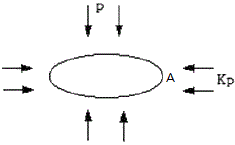
- 감소한다.
- 증가한다.
- 변화가 없다.
- 감소하다 증가한다.
(정답률: 59%)
98. 지반을 불연속체로 가정하여 해석하는 수치해석법은?
- 개별요소법
- 유한요소법
- 유한차분법
- 경계요소법
(정답률: 54%)
99. 굴착작업으로 이완된 암괴를 이완되지 않는 암반에 고정시켜 낙하를 방지하는 록볼트 지보효과는?
- 빔형성효과
- 매달림효과
- 내압효과
- 아치형성효과
(정답률: 74%)
100. 숏크리트의 습식공법과 비교하여 건식공법 단점으로 옳지 않은 것은?
- 콘크리트의 품질관리가 어렵다.
- 장거리 압송에 부적합하다.
- 분진의 발생량이 비교적 많다.
- 리바운드량이 비교적 많다.
(정답률: 73%)